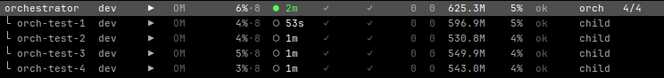
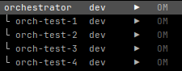
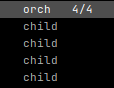

Coordinator + workers
One orchestrator.
Four children.



Role + child slots
4 / 4 running slots occupied
Messages connect workers to their coordinator.



Role + child slots
4 / 4 running slots occupied
Messages connect workers to their coordinator.